People
Researchers

Esteban Calzetta
Principal Researcher
Professor Emeritus
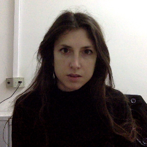
Diana López Nacir
Independent Researcher
Adjunct Professor
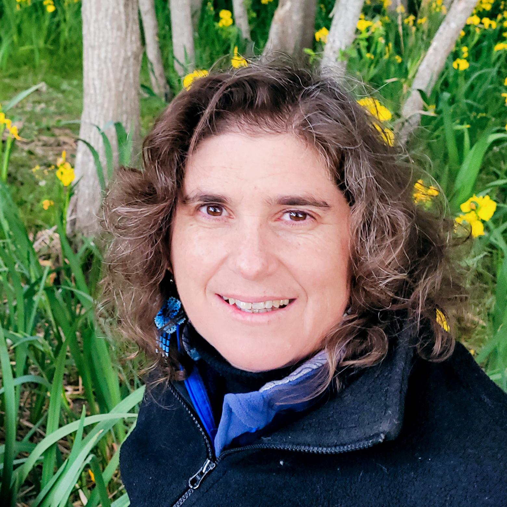
Susana Landau
Independent Researcher

Cecilia Scannapieco
Independent Researcher
Head of Practical Works
Claudio Simeone
Independent Researcher
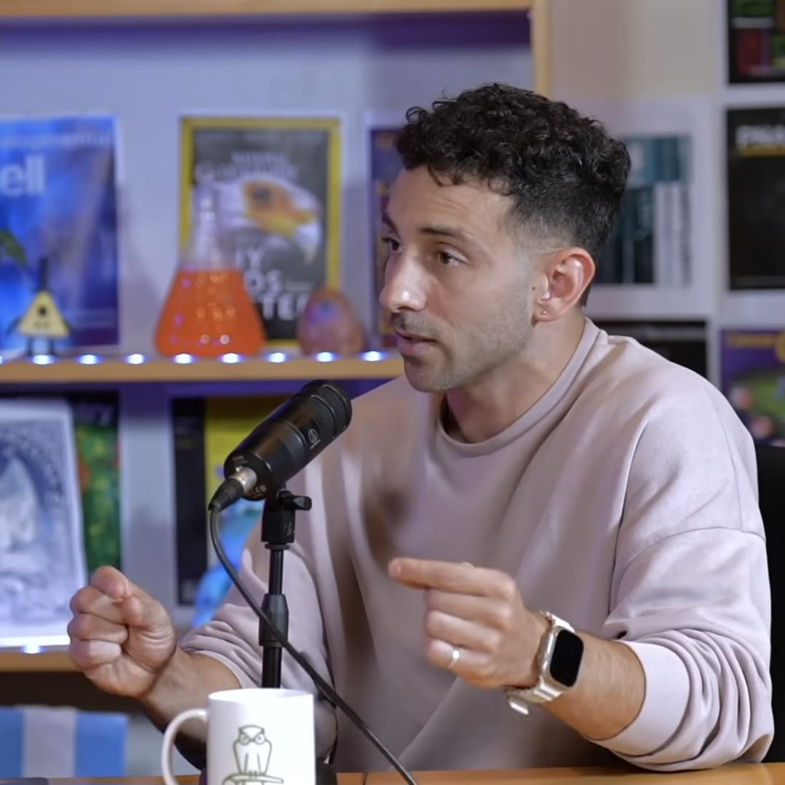
Nahuel Mirón Granese
Researcher
Head of Practical Works
Postdoctoral researchers, PhD students and undergraduate students
Javier Badía
Postdoctoral Researcher
Head of Practical Works
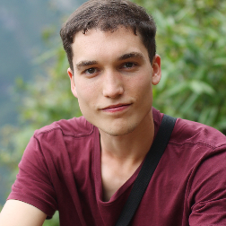
Tomas Ferreira Chase
PhD Student
First-rank Teaching Assistant
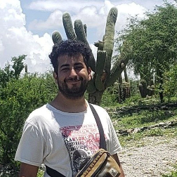
Matias Leizerovich
PhD Student
First-rank Teaching Assistant
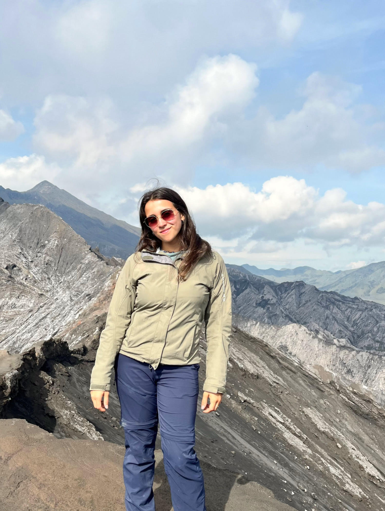
Guadalupe Ahumada Acuña
PhD Student
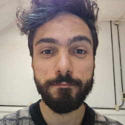
Gonzalo Santa Cruz
PhD Student
First-rank Teaching Assistant
Juan Pablo Elia
PhD Student
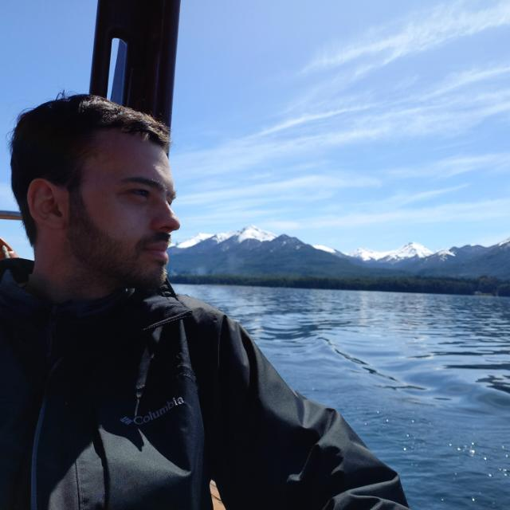
Augusto Chantada
PhD Student
First-rank Teaching Assistant
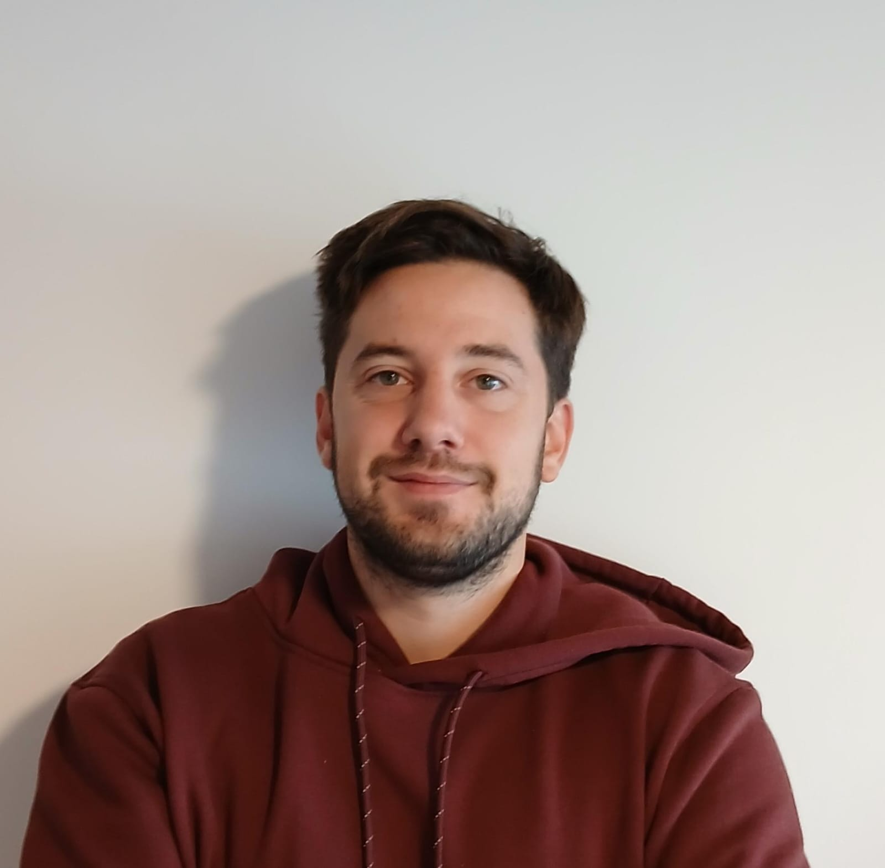
Luis Biaus
PhD Student
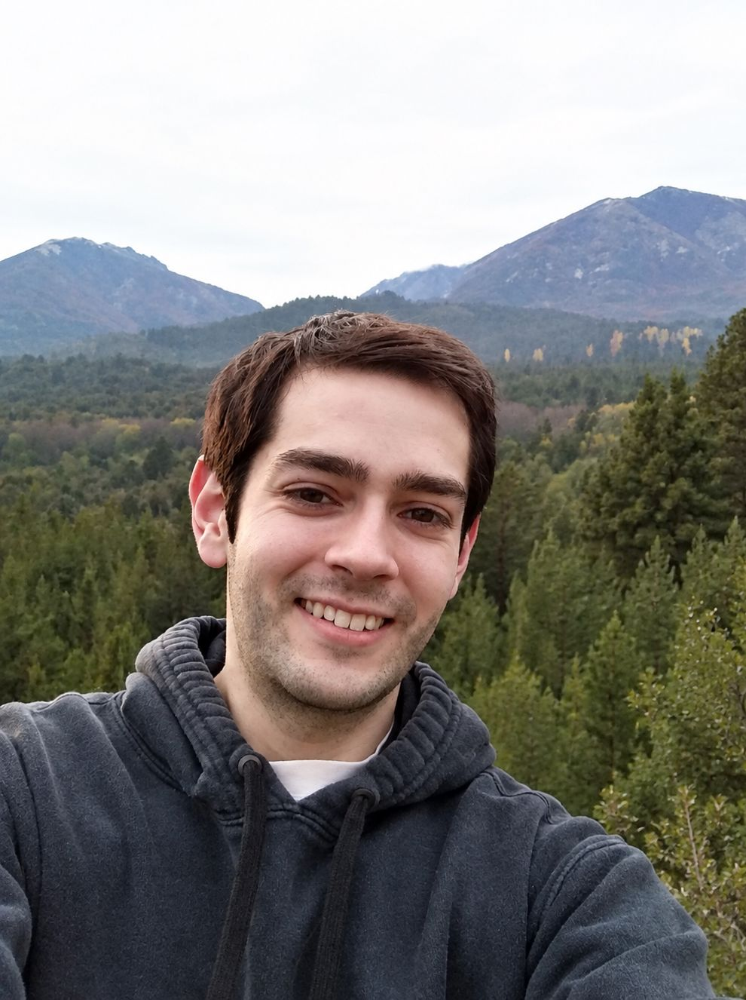
Ezequiel Lozano
PhD Student
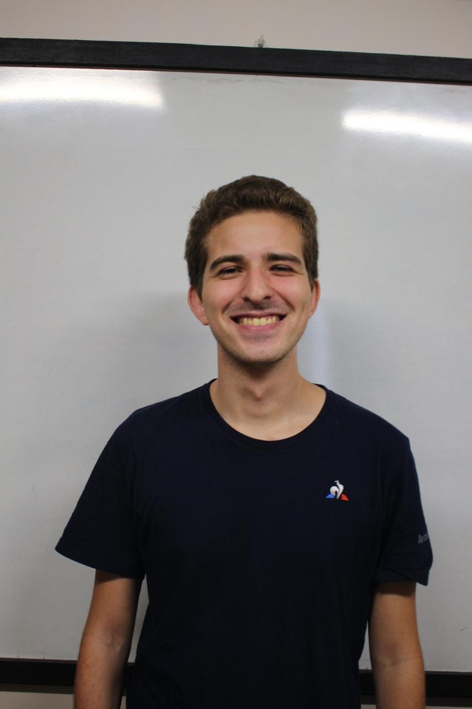
Federico Huxhagen
PhD Student
First-rank Teaching Assistant
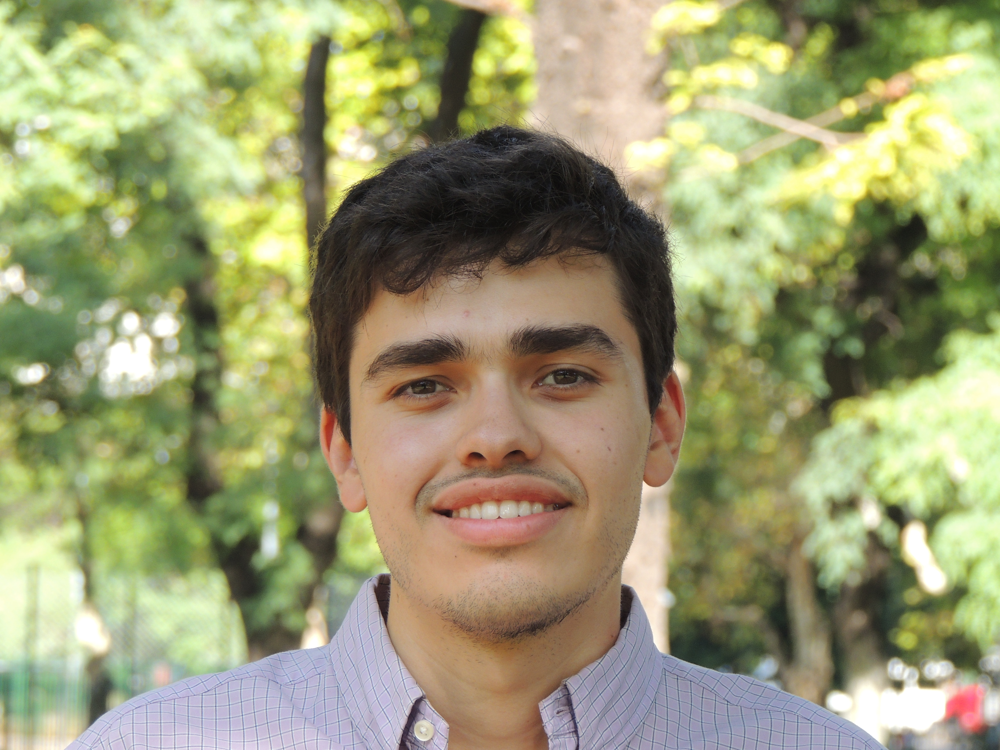
Martin Castelli
Undergraduate Student
Joaquín Sequeira
Undergraduate Student
Santiago Iannucci
Undergraduate Student
Santiago Paramio
Undergraduate Student
External Collaborators and Visitors
Matias Zaldarriaga (Institute for Advanced Study, Princeton, USA)
Visiting Researcher
Giorgio Torrieri (UNICAMP, Campinas, Brazil)
Visiting Researcher
Elia Battistelli (Sapienza Università di Roma, Italy)
Visiting Researcher
Alejandra Kandus (State University of Santa Cruz, Ilhéus-BA, Brazil)
Visiting Researcher
Juan Manuel Armaleo (IAFE UBA-CONICET, Argentina)
Postdoctoral Researcher
Nicolas Yunes (University of Illinois at Urbana-Champaign, USA)
Visiting Researcher
Arttu Rajantie (Imperial College London, UK)
Visiting Researcher
Martin Makler (CBPF, Rio de Janeiro, Brazil)
Visiting Researcher
Leonardo Trombetta (Università di Milano-Bicocca & INFN, Italy)
Visiting Researcher
Lucas Pinol (LPENS, Paris, France)
Visiting Researcher
Sebastian Cespedes (Imperial College London, UK)
Visiting Researcher
Jailson Alcaniz (Observatório Nacional, Rio de Janeiro, Brazil)
Visiting Researcher
Pavlos Protopapas (Harvard SEAS / IACS, USA)
Visiting Researcher
Giovanni Otalora (Universidad de Tarapacá, Arica, Chile)
Visiting Researcher
Martín Richarte (UFES, Brazil)
Visiting Researcher
Lucila Kraiselburd (UNLP — Faculty of Engineering, Argentina)
Visiting Researcher
Claudia Scoccola (University of Chile, Santiago, Chile)
Visiting Researcher
Past Members
Javier Pineau
Undergraduate Student, 2026
Pedro Rozin
Undergraduate Student, 2026
Tomas Ciccarella
Undergraduate Student, 2026
Federico Iza
PhD Student, 2026
Luca Gomez Bachar
Undergraduate Student, 2023